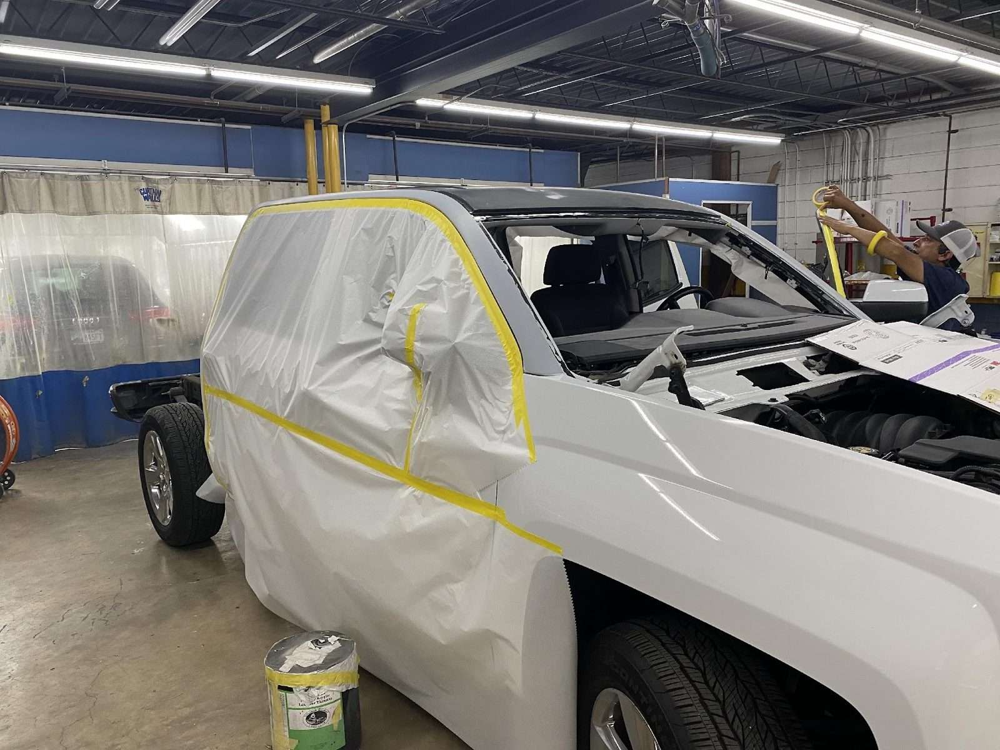

Collision repair
From crumpled panels to hidden damage underneath: careful diagnostics first, then the bodywork on cars, trucks and SUVs.
- Careful damage diagnostics
- Body and panel repair
- Cars, trucks and SUVs
Auto body shop · North Lamar, Austin
Careful damage checks, OEM parts, matched paint, smooth insurance claims.
4.8Google rating
379Google reviews
Mon–Fri8 AM to 5 PM
HoursMon–Fri 8 AM–5 PM
What we repair
Collision damage, paint, bumpers, wheels and insurance repairs for cars, trucks and SUVs.

From crumpled panels to hidden damage underneath: careful diagnostics first, then the bodywork on cars, trucks and SUVs.

Close paint matches, plus bumper replacement and touch-up work.

Repairs handled with your insurance company, OEM parts, and matching rims sourced when you need one.
The repair, step by step
Tell the shop what happened and bring the vehicle in.
The shop checks for underlying damage beyond the cosmetic.
Bodywork, parts and paint, coordinated with your insurance company.
379 Google reviews
Joe and Amanda were a pleasure to work with. They addressed all of my concerns. The repair work was excellent. I can say my truck came out better than when it went in. I will be a customer for life.
Over the past decades, I have only used Jeff's Auto Body to repair my vehicles. Perfect paint match - body work, honest answers about the repair, and only OEM parts used. Personally witness them reject the push by the insurance inspector to use used parts. Always recommended Jeff's to friends and family. They had the same experience as I have over these many years. If you want to have it repaired right, call them.
Jeff's did a fantastic job on my crumpled Subaru. Extremely professional and friendly shop, careful diagnostics for potential underlying damage beyond the cosmetic, and they worked seamlessly with my insurance company. To top it all off, I was thrilled that they also detailed my car, inside and out, as part of their service. She looks like she just rolled off the showroom floor! Couldn't be happier. These folks epitomize great customer service and excellent work.
About the shop
Under the yellow sign, we check for damage beyond the cosmetic before any work starts, then handle bodywork, paint and parts.
Joe and Amanda address every concern, reply promptly and turn jobs around fast.